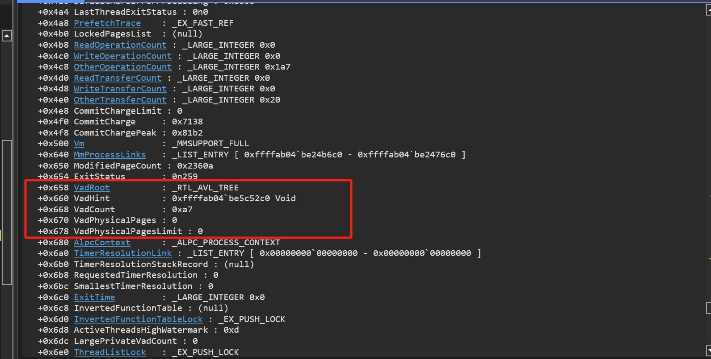

VAD_私有内存
私有内存
像malloc, virtualalloc申请的内存都是私有内存, MapViewofFile, MapViewOfSize, mdl, 这种是映射的内存
这些内存是由一个叫做vadroot的节点来管理的, 可以看一下这个位置

这里如果后续想获取到这个位置的话, 因为每个版本的偏移可能不一样, 可以通过函数PsGetProcessExitStatus来获取对应的偏移 + 4就是vadRoot
win10上的结构
+0x658 VadRoot : _RTL_AVL_TREE
+0x660 VadHint : 0xffff900f`4bf43e10 Void
+0x668 VadCount : 0xde
VadRoot: _RTL_AVL_TREE 里面就是代表了二叉搜索树的节点, 而里面的每个节点的结构都是__MMVAD的结构, VadHint多次查询的节点会放在这里, VadCount代表vad节点的个数
kd> dt _RTL_AVL_TREE ffff900f4c129400+0x658
nt!_RTL_AVL_TREE
+0x000 Root : 0xffff900f`4bf44810 _RTL_BALANCED_NODE
kd> dt 0xffff900f`4bf44810 _RTL_BALANCED_NODE
nt!_RTL_BALANCED_NODE
+0x000 Children : [2] 0xffff900f`4b1dcb10 _RTL_BALANCED_NODE
+0x000 Left : 0xffff900f`4b1dcb10 _RTL_BALANCED_NODE
+0x008 Right : 0xffff900f`4bfe65c0 _RTL_BALANCED_NODE
+0x010 Red : 0y0
+0x010 Balance : 0y00
+0x010 ParentValue : 0
!vad即可查询
其中start和End代表了开始和结束, 都需要乘上pagesize -> 0x1000其中end不一样(end + 1)*pagesize - 1, 里面的每一个节点都是_MMVAD的结构, 可以找一个私有内存看一下结构
kd> dt _MMVAD ffff900f4bf449a0
nt!_MMVAD
+0x000 Core : _MMVAD_SHORT
+0x040 u2 : <anonymous-tag>
+0x048 Subsection : 0x01dbdb86`7175af69 _SUBSECTION
+0x050 FirstPrototypePte : (null)
+0x058 LastContiguousPte : (null)
+0x060 ViewLinks : _IST_ENTRY [ 0xffff900f`4bfe4540 - 0x00000026`00000020 ]
+0x070 VadsProcess : (null)
+0x078 u4 : <anonymous-tag>
+0x080 FileObject : 0x00000004`00100200 _FILE_OBJECT
kd> dt _MMVAD_SHORT ffff900f4bf449a0
nt!_MMVAD_SHORT
+0x000 NextVad : 0xffff900f`4bfe4e00 _MMVAD_SHORT
+0x008 ExtraCreateInfo : 0xffff900f`4bfe29c0 Void
+0x000 VadNode : _RTL_BALANCED_NODE
+0x018 StartingVpn : 0x160
+0x01c EndingVpn : 0x166
+0x020 StartingVpnHigh : 0 ''
+0x021 c : 0 ''
+0x022 CommitChargeHigh : 0 ''
+0x023 SpareNT64VadUChar : 0 ''
+0x024 ReferenceCount : 0n0
+0x028 PushLock : _EX_PUSH_LOCK
+0x030 u : <anonymous-tag>
+0x034 u1 : <anonymous-tag>
+0x038 EventList : (null)
其中的__MMVAD_SHORT的前三个其实是union, 代表了下一个vad节点的地址, NextVad是左子树, ExtraCreateInfo是右子树
StartingVpn, EndingVpn, StartingVpnHigh, StartingVpnHigh可以看一下MiLocateAddress的写法, win10会和win7有不同, 计算方式为(result->Core.StartingVpn | ((unsigned __int64)result->Core.StartingVpnHigh << 32))和(result->Core.EndingVpn | ((unsigned __int64)result->Core.EndingVpnHigh << 32))
在_MMVAD_SHORT结构里有一项是u->_MMVAD_FLAGS结构, 其中的PrivateMemory代表了这里是不是私有内存, Protection代表了属性是多少, vadtype用于标记这段虚拟内存的用途或分配方式
看一下这个vadtype
| 值（十进制） | 名称 | 含义说明 |
|---|---|---|
| 0 | VadNone |
未指定类型（保留） |
| 1 | VadDevicePhysicalMemory |
映射的物理设备内存 |
| 2 | VadImageMap |
映像（如 EXE、DLL 文件）映射 |
| 3 | VadAwe |
使用 AWE（Address Windowing Extensions）分配的内存 |
| 4 | VadWriteWatch |
启用了写监视（Write-Watch）的内存，用于检测哪些页面被写入 |
| 5 | VadLargePages |
使用大页（Large Pages）分配的内存 |
| 6 | VadRotatePhysical |
映射旋转的物理内存（罕见） |
| 7 | VadLargePageSection |
段式大页分配（仅在某些版本支持） |
看一下这个Protection, 看一下NtAllocateVirtualMemory这个函数里关于Protection的字段可以很好的定位到MiMakeProtectionMask这个函数
看一下这个函数, 可以发现他把这个申请的内存属性分成了两个属性, 也刚好的在两个表中
我们可以举一个例子, 假设是PAGE_EXECUTE_READWRITE = 0x40
那么根据代码的逻辑, 他会被分成两个部分, 0100 0000一个是4一个是0, 那么就会在这个表中找一下, 因为第一个是0所以要直接在第二个表中找一下属性, 可以看到数组的第五个刚好是MM_EXECUTE_READWRITE
所以我们上面内存这个位置是0x4, 所以属性就是MM_READWRITE
写了三个功能:
1.打开IDA分析内核MiLocateAddress这个函数, 给一个R3地址, 返回一个VAD节点
2.给一个进程ID, 解析出此进程的所有VAD节点
3.移除内存所在vad节点的位置
#include "struct.h"
void RtlAvlRemoveNode(PVOID tree, PVOID node);
PEPROCESS LookUpProcess(HANDLE Pid)
{
PEPROCESS eprocess = NULL;
NTSTATUS Status = STATUS_UNSUCCESSFUL;
Status = PsLookupProcessByProcessId(Pid, &eprocess);
if (NT_SUCCESS(Status))
return eprocess;
return NULL;
}
ULONG64 GetVadOffset()
{
UNICODE_STRING func;
RtlInitUnicodeString(&func, L"PsGetProcessExitStatus");
ULONG64 funcAddr = MmGetSystemRoutineAddress(&func);
if (funcAddr == NULL)
{
return FALSE;
}
//8B 81 D4 07 00 00 mov eax, [rcx+7D4h]
PUCHAR funcBytes = (PUCHAR)funcAddr;
//DbgPrint("funcAddr : %p\n", funcAddr);
//DbgPrint("funcBytes : %p\n", funcBytes);
for (size_t i = 0; i < 0x10; i++)
{
if (funcBytes[0] == 0x8B && funcBytes[1] == 0x81)
{
UINT32 offset = *(UINT32*)(funcBytes + 2);
return offset + 0x4;
}
}
return FALSE;
}
PMMVAD MiLocateAddress(PEPROCESS eProcess, ULONG64 virtualAddress)
{
PRTL_AVL_TREE vadRoot = (PRTL_AVL_TREE)((PUCHAR)eProcess + GetVadOffset());
if (!vadRoot || !vadRoot->Root) {
return NULL; // VAD tree is empty or invalid
}
PMMVAD vad = (PMMVAD)vadRoot->Root;
if (!MmIsAddressValid(vad)) { return NULL; }
ULONG64 address = virtualAddress >> 12;
if (address < (vad->Core.StartingVpn | (vad->Core.StartingVpnHigh << 32)) || address >(vad->Core.EndingVpn | (vad->Core.EndingVpn << 32)))
{
while (vad)
{
if (address > (vad->Core.EndingVpn | (vad->Core.EndingVpnHigh << 32)))
{
vad = (PMMVAD)vad->Core.VadNode.Right;
}
else
{
if (address >= (vad->Core.StartingVpn | (vad->Core.StartingVpnHigh << 32)))
{
return vad;
}
vad = (PMMVAD)vad->Core.VadNode.Left;
}
}
}
return NULL;
}
PVOID EnumVad(PMMVAD vad)
{
if (!vad) {
return NULL;
}
PVOID stack[256];
int stackIndex = 0;
stack[stackIndex++] = vad;
while (stackIndex > 0) {
PMMVAD currentVad = (PMMVAD)stack[--stackIndex];
DbgPrintEx(77, 0, "Vad: %p | start : %x | end : %x | vadflags : %x \n",
currentVad,
currentVad->Core.StartingVpn,
currentVad->Core.EndingVpn,
currentVad->Core.u.VadFlags);
if (currentVad->Core.VadNode.Right) {
stack[stackIndex++] = (PVOID)currentVad->Core.VadNode.Right;
}
if (currentVad->Core.VadNode.Left) {
stack[stackIndex++] = (PVOID)currentVad->Core.VadNode.Left;
}
}
return NULL;
}
PVOID ParserProcessVad(PEPROCESS eProcess)
{
PRTL_AVL_TREE vadRoot = (PRTL_AVL_TREE)((PUCHAR)eProcess + GetVadOffset());
if (!vadRoot || !vadRoot->Root) {
return NULL; // VAD tree is empty or invalid
}
ULONG64 vadCount = *(PULONG64)((PUCHAR)eProcess + GetVadOffset() + 0x10);
PMMVAD vad = (PMMVAD)vadRoot->Root;
if (!MmIsAddressValid(vad)) { return NULL; }
EnumVad(vad);
}
PVOID LockPageProction(PEPROCESS eProcess, ULONG64 virtualaddress, PMMVAD vad)
{
}
PVOID RemoveVad(PEPROCESS eProcess, ULONG64 virtualaddress)
{
PMMVAD vad = MiLocateAddress(eProcess, virtualaddress);
if (!MmIsAddressValid(vad)) { return NULL; }
PRTL_AVL_TREE vadRoot = (PRTL_AVL_TREE)((PUCHAR)eProcess + GetVadOffset());
if (!vadRoot || !vadRoot->Root)
{
return NULL;
}
RtlAvlRemoveNode(vadRoot, vad);
ObReferenceObject(eProcess);
}
PVOID UnloadDriver(
_In_ PDRIVER_OBJECT DriverObject
)
{
UNREFERENCED_PARAMETER(DriverObject);
DbgPrintEx(77, 0, "Driver unloaded successfully.\n");
return STATUS_SUCCESS;
}
NTSTATUS DriverEntry(
_In_ PDRIVER_OBJECT DriverObject,
_In_ PUNICODE_STRING RegistryPath
)
{
UNREFERENCED_PARAMETER(RegistryPath);
DbgPrintEx(77, 0, "Driver loaded successfully.\n");
//1. 分析内核 MiLocateAddress 这个函数，然后照抄此判断是: 给一个R3地址，返回一个VAD 节点
//2. 给一个进程ID，解析出此进程的所有VAD节点
//3. 代码实现WIN10 WIN11 私有内存锁页
//4. 移除内存所在vad节点的位置
//DbgBreakPoint();
PEPROCESS eproc = NULL;
eproc = LookUpProcess(0x16c8);
if (!eproc) { return STATUS_UNSUCCESSFUL; }
UINT32 vadOffset = GetVadOffset();
if (!vadOffset) { return STATUS_UNSUCCESSFUL; }
//1: over
PMMVAD vad = MiLocateAddress(eproc, 0xDCE0000);
DbgPrintEx(77, 0, "Find Vad: %p\n", vad);
/*
+0x658 VadRoot : _RTL_AVL_TREE
+0x660 VadHint : 0xffffce01`8de7d9a0 Void
+0x668 VadCount : 0xaa
+0x670 VadPhysicalPages : 0
+0x678 VadPhysicalPagesLimit : 0
*/
//vadRoot是根节点, vadHint是上一次MiLocateAddress找到的指针, vadCount是vad的数量
//2: over
ParserProcessVad(eproc);
//3. over
RemoveVad(eproc, 0xDCE0000);
ObDereferenceObject(eproc);
DriverObject->DriverUnload = UnloadDriver;
return STATUS_SUCCESS;
}
VAD映射内存
Win10锁页
插入一个锁页的知识点, win10和win7有差别, 主要还是看win10, 直接看一下MmProtectVirtualMemory这个函数, 可以看到如果满足这两个逻辑的话, 就会返回失败
测试一个, 用CE申请了一块内存, 看一下对应的 +0x30的位置, 因为上面的& 0x3F800可以用不用考虑, 因为这个参数可以用的属性加起来也不会超过0x800所以这里为0, 那么我们让这个位置 Core.u.LongFlags & 0x1100000 == 0x1100000 就可以了
可以发现Graphics: 0y1 PrivateMemoryAlwaysSet: 0y1这个两个位置为1即可
代码实现:
PVOID LockVadProction(PEPROCESS eProcess, ULONG64 virtualaddress)
{
PMMVAD_SHORT vad = MiLocateAddress(eProcess, virtualaddress);
if (!MmIsAddressValid(vad)) { return NULL; }
vad->u.PrivateVadFlags.Graphics = 0x1;
vad->u.PrivateVadFlags.PrivateMemoryAlwaysSet = 0x1;
}
这样这个内存的页就不能被修改属性了
映射内存
找一个map的内存看一下, MMVAD_SHORT的结构
X64页表
页表自映射
页帧
物理页是有一个地方去管理，管理的时候用的是数组，没有用链表，因为数组的查找很快，因为物理地址是频繁运行，所以必须有一个很快的算法
有一个这样的数组叫做：mmpfndatabase, 数组里的每一个元素都是mmpfn结构,
数组的索引, pte的页帧 —> 某些属性 + 页帧 + 属性
mmpfndatabase[pte.页帧]
x64分页
x64 获取PTEbase
#include <ntifs.h>
ULONG64 g_PteAddress = 0;
ULONG64 g_PdeAddress = 0;
ULONG64 g_PpeAddress = 0;
ULONG64 g_PxeAddress = 0;
ULONG64 GetPteAddress(ULONG64 Address)
{
return (ULONG64)(((Address >> 9) & 0x7FFFFFFFF8) + g_PteAddress);
}
ULONG64 GetPdeAddress(ULONG64 Address)
{
return (ULONG64)(((Address >> 9) & 0x7FFFFFFFF8) + g_PteAddress);
}
ULONG64 GetPpeAddress(ULONG64 Address)
{
return (ULONG64)(((Address >> 9) & 0x7FFFFFFFF8) + g_PteAddress);
}
ULONG64 GetPxeAddress(ULONG64 Address)
{
return (ULONG64)(((Address >> 9) & 0x7FFFFFFFF8) + g_PteAddress);
}
VOID GetFourTableBASE()
{
ULONG64 DirectoryTableBase = *(PULONG64)((PUCHAR)PsInitialSystemProcess + 0x28);
//后12位属性
DirectoryTableBase &= ~0xFFF;
PHYSICAL_ADDRESS address;
address.QuadPart = DirectoryTableBase;
PULONG64 VirtualDirectorBase = MmGetVirtualForPhysical(address);
ULONG64 index = -1;
for (size_t i = 0; i < 512; i++)
{
ULONG64 data = VirtualDirectorBase[i];
//8000 0000001aa063
//48 0xFFFFFFFFFFFF
//ULONG64 testData = ((data & ~0xFFF) & 0xFFFFFFFFFFFF);
if (DirectoryTableBase == ((data & ~0xFFF) & 0xFFFFFFFFFFFF))
{
index = i;
break;
}
}
if (index != -1)
{
g_PteAddress = (index + 0x1FFFE00) << 39;
g_PdeAddress = (index << 30) + g_PteAddress;
g_PpeAddress = (index << 21) + g_PdeAddress;
g_PxeAddress = (index << 12) + g_PpeAddress;
}
}
VOID DriverUnload(PDRIVER_OBJECT pDriver)
{
}
NTSTATUS DriverEntry(PDRIVER_OBJECT pDriver, PUNICODE_STRING pSeg)
{
//1. 获取pte的基址 （ MmGetVirtualForPhysical ）
//2. 解析 返回PTE PDE PDPTE PML4的地址 ( MmIsAddressValidEx )
//1. over
DbgBreakPoint();
GetFourTableBASE();
if (g_PteAddress != NULL)
{
DbgPrintEx(77, 0, "PTEBASE: %p\n", g_PteAddress);
DbgPrintEx(77, 0, "PDEBASE: %p\n", g_PdeAddress);
DbgPrintEx(77, 0, "PPEBASE: %p\n", g_PpeAddress);
DbgPrintEx(77, 0, "PXEBASE: %p\n", g_PxeAddress);
}
else
{
DbgPrintEx(77, 0, "ERROR\n");
}
//2. over
ULONG64 gdtr = 0xfffff80258bc4fb0;
ULONG64 gdtrPte = GetPteAddress(gdtr);
ULONG64 gdtrPde = GetPdeAddress(gdtrPte);
ULONG64 gdtrPpe = GetPpeAddress(gdtrPde);
ULONG64 gdtrPxe = GetPxeAddress(gdtrPpe);
DbgPrintEx(77, 0, "gdtrPte: %p\n", gdtrPte);
DbgPrintEx(77, 0, "gdtrPde: %p\n", gdtrPde);
DbgPrintEx(77, 0, "gdtrPpe: %p\n", gdtrPpe);
DbgPrintEx(77, 0, "gdtrPxe: %p\n", gdtrPxe);
pDriver->DriverUnload = DriverUnload;
return STATUS_SUCCESS;
}
PTE的原型
原型PTE本质上就是我们PTE的生命周期
我们的dll还有exe是多个进程共用一个文件的存在，重新创建一个进程跑起来，还是会使用dll，
allocatememory 当我们申请内存的时候，如果一次都没有访问过，是一个没有挂物理页的虚拟地址，当我们访问一下的时候，此时回给他挂上物理页
上面的四种当我们申请内存的时候有可能是空的, d的表述, 此时申请完，我们去访问的时候，会发生页异常错误，抛给14号中断，判断是用户态模式还是内核态的模式，内核态的话直接就蓝屏，因为内核态模式是没有vad的，在用户态还要去检测一下有没有vad，如果在vad中，而且保护属性不是noaccess的话，其他的页属性的话会进一步的去给他挂物理页然后去修复